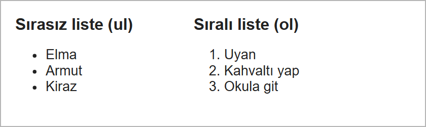
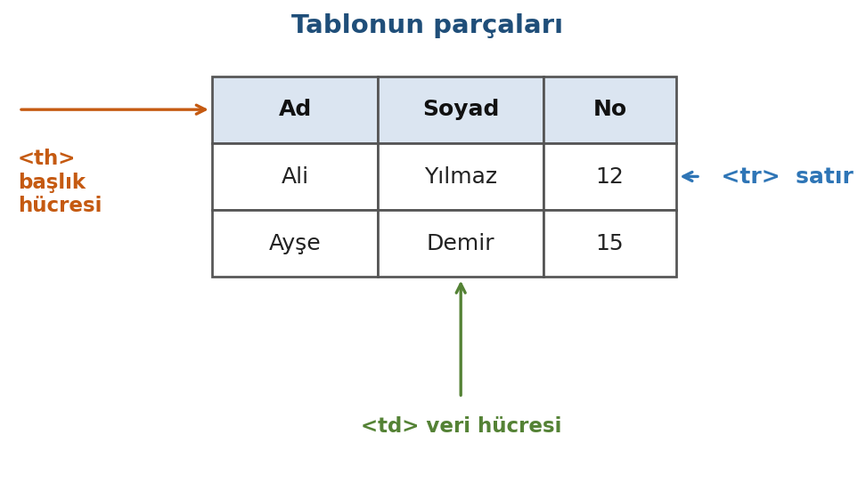
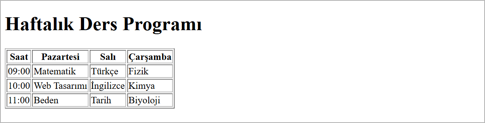

Listeler ve Tablolar
Bu sayfada
Liste, birbiriyle ilgili maddeleri alt alta sıralar: tarif adımları ya da bir menüdeki bağlantılar gibi. Tablo ise veriyi satır ve sütunlara yerleştirir; ders programı ya da fiyat listesi gibi karşılaştırılacak bilgiler için kullanılır. İkisinde de tarayıcı düzeni etiketlerden anlar: listede her madde, tabloda her hücre ayrı bir etiketle yazılır.
1Listeler
Listeler iki türlüdür ve her ikisinde de her madde <li> (list item) etiketiyle yazılır.

1.1. Sırasız Liste: <ul>
Maddelerin sırası önemli değilse sırasız liste kullanılır. Tarayıcı her maddenin başına madde işareti (•) koyar.
<h2>Alışveriş Listesi</h2>
<ul>
<li>Elma</li>
<li>Armut</li>
<li>Kiraz</li>
</ul>
1.2. Sıralı Liste: <ol>
Maddelerin sırası önemliyse (adımlar, sıralama) sıralı liste kullanılır. Tarayıcı her maddeyi numaralandırır.
<h2>Sabah Rutini</h2>
<ol>
<li>Uyan</li>
<li>Kahvaltı yap</li>
<li>Okula git</li>
</ol>
Numara yerine harf veya Roma rakamı istiyorsanız type özelliğini kullanabilirsiniz:
type değeri | Görünüm |
|---|---|
1 | 1, 2, 3 (varsayılan) |
A | A, B, C |
a | a, b, c |
I | I, II, III |
<ol type="A">
<li>Birinci</li>
<li>İkinci</li>
</ol>
1.3. İç İçe Liste
Bir maddenin altında alt maddeler olabilir. Bunun için <li> içine yeni bir liste yazılır:
<ul>
<li>Meyveler
<ul>
<li>Elma</li>
<li>Armut</li>
</ul>
</li>
<li>Sebzeler</li>
</ul>
2Tablolar
Tablolar, verileri satır ve sütunlar hâlinde düzenler. Bir tablonun parçaları şunlardır:

| Etiket | Açılımı | Görevi |
|---|---|---|
<table> | table | Tabloyu başlatır ve bitirir. |
<tr> | table row | Bir satır oluşturur. |
<th> | table header | Başlık hücresi (varsayılan olarak kalın ve ortalı). |
<td> | table data | Veri hücresi (normal içerik). |
2.1. Basit Tablo Örneği
Bir tablo, satırlardan (<tr>); her satır da hücrelerden (<th> veya <td>) oluşur. İlk satır genellikle başlık satırıdır.
<table border="1">
<tr>
<th>Ad</th>
<th>Soyad</th>
<th>No</th>
</tr>
<tr>
<td>Ali</td>
<td>Yılmaz</td>
<td>12</td>
</tr>
<tr>
<td>Ayşe</td>
<td>Demir</td>
<td>15</td>
</tr>
</table>
border="1" özelliği, hücrelerin kenarlıklarının görünmesini sağlar. Bu olmadan tablo çizgisiz görünür. Tabloların renk, boşluk ve çizgi gibi görsel ayarları esas olarak CSS ile yapılır; CSS'i 6. haftada, CSS'e Giriş konusunda göreceğiz. border="1" HTML5'te eskimiş sayılır; CSS'i öğrenene kadar kenarlığı görmek için geçici olarak kullanıyoruz.
3Örnek: Haftalık Ders Programı
Şimdi bu haftanın çıktısını hazırlayalım: bir haftalık ders programı tablosu. İlk satır günlerin başlığı (<th>), diğer satırlar saatlere göre dersleri (<td>) içerir.
<!DOCTYPE html>
<html lang="tr">
<head>
<meta charset="utf-8">
<title>Ders Programı</title>
</head>
<body>
<h1>Haftalık Ders Programı</h1>
<table border="1">
<tr>
<th>Saat</th>
<th>Pazartesi</th>
<th>Salı</th>
<th>Çarşamba</th>
</tr>
<tr>
<td>09:00</td>
<td>Matematik</td>
<td>Türkçe</td>
<td>Fizik</td>
</tr>
<tr>
<td>10:00</td>
<td>Web Tasarımı</td>
<td>İngilizce</td>
<td>Kimya</td>
</tr>
<tr>
<td>11:00</td>
<td>Beden</td>
<td>Tarih</td>
<td>Biyoloji</td>
</tr>
</table>
</body>
</html>
Kaydedip Go Live ile açtığınızda tarayıcıda şu sonucu görürsünüz:

Başlık satırındaki hücreler <th> olduğu için kalın ve ortalı; diğer hücreler <td> olduğu için normal görünür.
4Sıkça Yapılan 5 Hata
| Hata | Sonuç | Çözüm |
|---|---|---|
<li>'yi <ul>/<ol> dışında kullanmak | Madde işaretleri görünmez, maddeler düz yazı gibi alt alta durur | <li> her zaman <ul> veya <ol> içinde olmalı |
| Satırlarda hücre sayısını eşit tutmamak (bir satırda 3, diğerinde 2 hücre) | Kısa satırın sonunda boş bir alan kalır | Her satırda aynı sayıda hücre olsun |
<tr> içine doğrudan metin yazmak | Metin tablonun dışına, üstüne taşınır | Metni <td> veya <th> içine yazın |
| Kenarlık görünmemesi | Tablo çizgisiz kalır | border="1" ekleyin (veya CSS) |
<th> ile <td>'yi karıştırmak | Başlıklar normal görünür | Başlık hücresi için <th>, veri için <td> |
5Bu Haftanın Özeti
- Listeler
<li>maddelerinden oluşur:<ul>madde işaretli (sırasız),<ol>numaralı (sıralı) liste yapar. <ol type="A">ile numaralar harfe (A, B, C) veya Roma rakamına dönüştürülebilir.- Bir
<li>içine yeni bir liste yazarak iç içe liste oluşturulur. - Tablo parçaları:
<table>tabloyu,<tr>bir satırı,<th>başlık hücresini,<td>veri hücresini tanımlar. - Her satırda aynı sayıda hücre bulunmalıdır; başlık satırı genellikle
<th>ile yazılır. border="1"kenarlıkları görünür kılar; asıl görsel düzenleme CSS ile yapılır.
6Konu Sonu Testi
-
Numaralı (sıralı) bir liste oluşturmak için hangi etiket kullanılır?
- a)
<ul> - b)
<ol> - c)
<li> - d)
<list>
Cevabı göster
bSıralı (numaralı) liste<ol>ile yapılır;<ul>madde işareti koyar. - a)
-
Bir listedeki her madde hangi etiketle yazılır?
- a)
<li> - b)
<td> - c)
<tr> - d)
<ul>
Cevabı göster
aHer liste maddesi<li>ile yazılır. - a)
-
Bir tabloda satır hangi etiketle tanımlanır?
- a)
<td> - b)
<th> - c)
<tr> - d)
<table>
Cevabı göster
cBir satır<tr>(table row) ile tanımlanır. - a)
-
Tablonun başlık hücresi (varsayılan olarak kalın ve ortalı) hangi etikettir?
- a)
<th> - b)
<td> - c)
<tr> - d)
<h1>
Cevabı göster
aBaşlık hücresi<th>'dir; kalın ve ortalı görünür. - a)
-
Bir tablo hücresine normal veri yazmak için hangi etiket kullanılır?
- a)
<tr> - b)
<th> - c)
<td> - d)
<li>
Cevabı göster
cVeri hücresi<td>(table data) ile yazılır. - a)
7Uygulamalar
Görev: Bir sayfada, üç ürün ve fiyatını gösteren bir tablo, ayrıca bir kek tarifinin adımlarını gösteren bir sıralı liste oluşturunuz.
Çözüm:
<!DOCTYPE html>
<html lang="tr">
<head>
<meta charset="utf-8">
<title>Ürünler ve Tarif</title>
</head>
<body>
<h1>Fiyat Listesi</h1>
<table border="1">
<tr>
<th>Ürün</th>
<th>Fiyat</th>
</tr>
<tr>
<td>Ekmek</td>
<td>15 TL</td>
</tr>
<tr>
<td>Süt</td>
<td>30 TL</td>
</tr>
<tr>
<td>Yumurta</td>
<td>60 TL</td>
</tr>
</table>
<h2>Kek Tarifi</h2>
<ol>
<li>Malzemeleri karıştırın.</li>
<li>Kalıba dökün.</li>
<li>Fırında 40 dakika pişirin.</li>
</ol>
</body>
</html>
Adımlar:
web_sitemklasöründeurunler.htmladında yeni bir dosya oluşturunuz.- Yukarıdaki kodu yazıp kaydediniz (
Ctrl+S). - Go Live varsa Go Live ile, yoksa dosyayı tarayıcıda açarak tablo ve listenin göründüğünü doğrulayınız.
8Sınıf Uygulaması
Senaryo: Bir konuyu (kendi seçtiğiniz bir işletme, hobi veya ders) liste ve tablo kullanarak düzenli biçimde sunan bir bilgi sayfası hazırlayın.
Yapılacaklar:
web_sitemklasöründebilgi.htmladında yeni bir dosya oluşturun.- Bir
<ul>(sırasız liste) ile en az beş madde yazın (örneğin hizmetler veya ilgi alanları). - Bir
<ol>(sıralı liste) ile bir adım listesi yazın (örneğin bir tarif veya süreç). - Bir
<table border="1">oluşturun: ilk satır<th>başlıkları, sonraki satırlar<td>verileri (örneğin haftalık program veya fiyat listesi).
Beklenen sonuç: Sayfada madde işaretli bir liste, numaralı bir liste ve kenarlıklı, başlıklı bir tablo görünür.
İpuçları: <li> her zaman <ul>/<ol> içinde olmalı. Tabloda her satırda aynı sayıda hücre bulunmalı; başlık hücreleri için <th> kullanın.
9Notlar ve İpuçları
- Tablolar yalnızca satır-sütun biçimindeki veriler içindir. Sayfa yerleşimi (menü solda, içerik sağda gibi) tabloyla yapılmaz; bu iş 11. haftada, Flexbox 2 ve Sayfa Yerleşimi konusunda CSS ile yapılır.
<th>yalnızca kalın görünmek için değildir. Ekran okuyucular başlık hücresi sayesinde her verinin hangi sütuna ait olduğunu okuyabilir.- İç içe listede alt liste,
<li>'nin içine,</li>'den önce yazılır.
10Çalışma Soruları
<ul>ile en sevdiğiniz beş filmi listeleyiniz.<ol>ile sabah rutininizi sırayla yazınız.- Üç sütunlu (Ad, Şehir, Yaş) ve üç satırlı bir tablo oluşturunuz.
- Kendi haftalık ders programınızı bir tablo hâline getiriniz.
- Bir
<ol>listesindetype="A"kullanıp numaraların harfe dönüştüğünü gözlemleyiniz. - Bir listeyi iç içe yapınız: bir maddenin altına alt liste ekleyiniz.
Kaynakça
- MDN: Lists (İngilizce)
- MDN: HTML table basics (İngilizce)
Bu haftanın Sınıf Uygulaması sayfanın sonundadır. Önce konu anlatımını okuyun, sonra uygulamayı kendi bilgisayarınızda yapın.